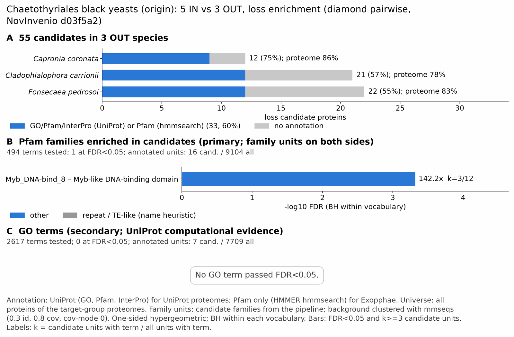

yc chaetothyriales: functional enrichment (loss)
One-sided hypergeometric test per term; Benjamini-Hochberg FDR within each scope, level and vocabulary. Candidates are the loss candidates: gene families present in the OUT group and absent from the IN group. Universe: proteome. Background clustered: True (32881 sequences in 14202 clusters, mmseqs easy-cluster --min-seq-id 0.3 -c 0.8). Family level: one unit per candidate family and per background cluster.
Sources: Pfam: 2026-01-27-Pfam38.2; InterPro entries: 110.0; GO: releases/2026-07-26; analysis generated 2026-10-24T14:32:25. Source tables: /bigdata/stajichlab/jstajich/projects/NovInvenio_Investigations/studies/fungi/yeast_convergence/yc_chaetothyriales/analysis/enrichment/outputs/loss/proteome_clustered.
Full record: PROVENANCE. Run report: report.html.
Related: yeast_convergence: comparison across contrasts
- Annotation provenance is not fully recorded: PROVENANCE.yaml lists the per-species annotation files and their checksums, but not the UniProt release they come from.
- GO results are secondary. GO annotations include computational evidence (IEA, IBA); the GO evidence column shows if a term has non-IEA support.
- Candidate families (pipeline clustering of candidates) and background clusters (mmseqs clustering of the background proteome) are made by different runs, so family-level counts are not fully comparable.
- Low annotation: the candidate set has less than 50% annotation for Pfam 41.8%, GO 21.8%. Enrichment for these vocabularies has low power.
Summary figure

Annotation coverage
Fraction of proteins with at least one term per vocabulary. Universe = all proteins of the species; candidates = the candidate set.
| Species | Set | Proteins | Pfam | Pfam clan | InterPro | GO | Any |
|---|---|---|---|---|---|---|---|
| Caprcoro | universe | 9230 | 80.9% | 66.1% | 85.3% | 71.0% | 85.6% |
| Caprcoro | candidates | 12 | 50.0% | 41.7% | 75.0% | 41.7% | 75.0% |
| Cladcarr | universe | 11181 | 72.1% | 58.7% | 77.6% | 62.8% | 77.9% |
| Cladcarr | candidates | 21 | 47.6% | 38.1% | 57.1% | 19.1% | 57.1% |
| Fonspedr | universe | 12525 | 78.2% | 64.9% | 83.0% | 66.8% | 83.3% |
| Fonspedr | candidates | 22 | 31.8% | 27.3% | 54.5% | 13.6% | 54.5% |
| ALL_OUT | universe | 32936 | 76.8% | 63.1% | 81.8% | 66.6% | 82.1% |
| ALL_OUT | candidates | 55 | 41.8% | 34.5% | 60.0% | 21.8% | 60.0% |
Tests summary
Per vocabulary: terms with FDR < 0.05 / terms tested. Protein level counts proteins; family level counts candidate families and background clusters.
| Scope | Level | Cand. units | Pfam sig / tested | Pfam clan sig / tested | InterPro sig / tested | GO sig / tested |
|---|---|---|---|---|---|---|
| whole_set | family | 43 | 1 / 494 | 2 / 268 | 4 / 1129 | 0 / 2617 |
| whole_set | protein | 55 | 7 / 1540 | 7 / 408 | 13 / 3369 | 17 / 4175 |
| Caprcoro | family | 11 | 0 / 300 | 0 / 226 | 0 / 738 | 0 / 2077 |
| Caprcoro | protein | 12 | 0 / 391 | 3 / 244 | 0 / 963 | 0 / 2229 |
| Cladcarr | family | 21 | 1 / 327 | 3 / 229 | 4 / 809 | 2 / 2416 |
| Cladcarr | protein | 21 | 1 / 425 | 3 / 244 | 4 / 1054 | 2 / 2566 |
| Fonspedr | family | 22 | 0 / 374 | 0 / 239 | 0 / 873 | 0 / 2122 |
| Fonspedr | protein | 22 | 0 / 495 | 0 / 260 | 0 / 1194 | 0 / 2351 |
Top 25 Pfam terms (whole set, family level)
25 rows shown, ordered by FDR then p-value; 1 have FDR < 0.05 (bold).
| Term | Name | k / N cand. | n / M bg | Fold | FDR (BH) |
|---|---|---|---|---|---|
| PF22980 | Myb_DNA-bind_8: Myb-like DNA-binding domain | 3 / 16 | 12 / 9104 | 142.25 | 4.79e-04 |
| PF14087 | DUF4267: Domain of unknown function (DUF4267) | 1 / 16 | 6 / 9104 | 94.833 | 1.000 |
| PF25534 | DUF7918: Domain of unknown function (DUF7918) | 1 / 16 | 6 / 9104 | 94.833 | 1.000 |
| PF20253 | DUF6604: Family of unknown function (DUF6604) | 1 / 16 | 7 / 9104 | 81.286 | 1.000 |
| PF11374 | DUF3176: Protein of unknown function (DUF3176) | 1 / 16 | 11 / 9104 | 51.727 | 1.000 |
| PF11951 | Fungal_trans_2: Fungal specific transcription factor domain | 1 / 16 | 171 / 9104 | 3.327 | 1.000 |
| PF00004 | AAA: ATPase family associated with various cellular activities (AAA) | 0 / 16 | 42 / 9104 | 0.0 | 1.000 |
| PF00005 | ABC_tran: ABC transporter | 0 / 16 | 29 / 9104 | 0.0 | 1.000 |
| PF00009 | GTP_EFTU: Elongation factor Tu GTP binding domain | 0 / 16 | 15 / 9104 | 0.0 | 1.000 |
| PF00010 | HLH: Helix-loop-helix DNA-binding domain | 0 / 16 | 15 / 9104 | 0.0 | 1.000 |
| PF00011 | HSP20: Hsp20/alpha crystallin family | 0 / 16 | 8 / 9104 | 0.0 | 1.000 |
| PF00012 | HSP70: Hsp70 protein | 0 / 16 | 8 / 9104 | 0.0 | 1.000 |
| PF00013 | KH_1: KH domain | 0 / 16 | 6 / 9104 | 0.0 | 1.000 |
| PF00018 | SH3_1: SH3 domain | 0 / 16 | 19 / 9104 | 0.0 | 1.000 |
| PF00022 | Actin: Actin | 0 / 16 | 7 / 9104 | 0.0 | 1.000 |
| PF00023 | Ank: Ankyrin repeat | 0 / 16 | 45 / 9104 | 0.0 | 1.000 |
| PF00026 | Asp: Eukaryotic aspartyl protease | 0 / 16 | 11 / 9104 | 0.0 | 1.000 |
| PF00043 | GST_C: Glutathione S-transferase, C-terminal domain | 0 / 16 | 11 / 9104 | 0.0 | 1.000 |
| PF00067 | p450: Cytochrome P450 | 0 / 16 | 62 / 9104 | 0.0 | 1.000 |
| PF00069 | Pkinase: Protein kinase domain | 0 / 16 | 141 / 9104 | 0.0 | 1.000 |
| PF00071 | Ras: Ras family | 0 / 16 | 17 / 9104 | 0.0 | 1.000 |
| PF00072 | Response_reg: Response regulator receiver domain | 0 / 16 | 18 / 9104 | 0.0 | 1.000 |
| PF00076 | RRM_1: RNA recognition motif | 0 / 16 | 72 / 9104 | 0.0 | 1.000 |
| PF00082 | Peptidase_S8: Subtilase family | 0 / 16 | 10 / 9104 | 0.0 | 1.000 |
| PF00083 | Sugar_tr: Sugar (and other) transporter | 0 / 16 | 52 / 9104 | 0.0 | 1.000 |
Top 25 InterPro terms (whole set, family level)
25 rows shown, ordered by FDR then p-value; 4 have FDR < 0.05 (bold).
| Term | Name | k / N cand. | n / M bg | Fold | FDR (BH) |
|---|---|---|---|---|---|
| IPR016007 | Family:Alpha-L-rhamnosidase | 4 / 24 | 6 / 9971 | 276.972 | 4.36e-07 |
| IPR054505 | Domain:Myb-like DNA-binding domain | 3 / 24 | 12 / 9971 | 103.865 | 0.002 |
| IPR008928 | Homologous_superfamily:Six-hairpin glycosidase superfamily | 3 / 24 | 25 / 9971 | 49.855 | 0.009 |
| IPR012341 | Homologous_superfamily:Six-hairpin glycosidase-like superfamily | 3 / 24 | 26 / 9971 | 47.937 | 0.009 |
| IPR025363 | Family:Protein of unknown function DUF4267 | 1 / 24 | 6 / 9971 | 69.243 | 1.000 |
| IPR057678 | Domain:Domain of unknown function DUF7918 | 1 / 24 | 6 / 9971 | 69.243 | 1.000 |
| IPR046539 | Domain:Domain of unknown function DUF6604 | 1 / 24 | 7 / 9971 | 59.351 | 1.000 |
| IPR021514 | Family:Protein of unknown function DUF3176 | 1 / 24 | 11 / 9971 | 37.769 | 1.000 |
| IPR013087 | Domain:Zinc finger C2H2-type | 2 / 24 | 127 / 9971 | 6.543 | 1.000 |
| IPR008979 | Homologous_superfamily:Galactose-binding-like domain superfamily | 1 / 24 | 18 / 9971 | 23.081 | 1.000 |
| IPR050936 | Family:AP-1-like transcription factor yap1-like | 1 / 24 | 25 / 9971 | 16.618 | 1.000 |
| IPR013783 | Homologous_superfamily:Immunoglobulin-like fold | 1 / 24 | 27 / 9971 | 15.387 | 1.000 |
| IPR043129 | Homologous_superfamily:ATPase, nucleotide binding domain | 1 / 24 | 40 / 9971 | 10.386 | 1.000 |
| IPR014710 | Homologous_superfamily:PpnP-like, jelly roll fold | 1 / 24 | 46 / 9971 | 9.032 | 1.000 |
| IPR004827 | Domain:Basic-leucine zipper domain | 1 / 24 | 47 / 9971 | 8.84 | 1.000 |
| IPR011051 | Homologous_superfamily:RmlC-like cupin domain superfamily | 1 / 24 | 47 / 9971 | 8.84 | 1.000 |
| IPR011008 | Homologous_superfamily:Dimeric alpha-beta barrel | 1 / 24 | 49 / 9971 | 8.479 | 1.000 |
| IPR046347 | Homologous_superfamily:Basic-leucine zipper domain superfamily | 1 / 24 | 58 / 9971 | 7.163 | 1.000 |
| IPR001841 | Domain:Zinc finger, RING-type | 1 / 24 | 73 / 9971 | 5.691 | 1.000 |
| IPR013083 | Homologous_superfamily:Zinc finger, RING/FYVE/PHD-type | 1 / 24 | 141 / 9971 | 2.947 | 1.000 |
| IPR021858 | Family:Fungal transcription factor | 1 / 24 | 171 / 9971 | 2.43 | 1.000 |
| IPR011009 | Homologous_superfamily:Protein kinase-like domain superfamily | 1 / 24 | 238 / 9971 | 1.746 | 1.000 |
| IPR036291 | Homologous_superfamily:NAD(P)-binding domain superfamily | 1 / 24 | 349 / 9971 | 1.19 | 1.000 |
| IPR000008 | Domain:C2 domain | 0 / 24 | 12 / 9971 | 0.0 | 1.000 |
| IPR000014 | Domain:PAS domain | 0 / 24 | 13 / 9971 | 0.0 | 1.000 |
Top 15 GO terms (whole set, family level) — secondary, computational evidence (IEA/IBA) included
15 rows shown, ordered by FDR then p-value; 0 have FDR < 0.05 (bold).
| Term | Name | k / N cand. | n / M bg | Fold | FDR (BH) | GO evidence | Families with non-IEA |
|---|---|---|---|---|---|---|---|
| GO:0004553 | molecular_function:hydrolase activity, hydrolyzing O-glycosyl compounds | 3 / 7 | 129 / 7709 | 25.611 | 0.277 | IEA_only | 0 |
| GO:0016798 | molecular_function:hydrolase activity, acting on glycosyl bonds | 3 / 7 | 144 / 7709 | 22.943 | 0.277 | IEA_only | 0 |
| GO:0005975 | biological_process:carbohydrate metabolic process | 3 / 7 | 255 / 7709 | 12.956 | 0.989 | IEA_only | 0 |
| GO:0046348 | biological_process:amino sugar catabolic process | 1 / 7 | 8 / 7709 | 137.661 | 1.000 | IEA_only | 0 |
| GO:0033500 | biological_process:carbohydrate homeostasis | 1 / 7 | 9 / 7709 | 122.365 | 1.000 | IEA_only | 0 |
| GO:0042593 | biological_process:glucose homeostasis | 1 / 7 | 9 / 7709 | 122.365 | 1.000 | IEA_only | 0 |
| GO:1901700 | biological_process:response to oxygen-containing compound | 1 / 7 | 16 / 7709 | 68.83 | 1.000 | IEA_only | 0 |
| GO:0019200 | molecular_function:carbohydrate kinase activity | 1 / 7 | 17 / 7709 | 64.782 | 1.000 | IEA_only | 0 |
| GO:0004857 | molecular_function:enzyme inhibitor activity | 1 / 7 | 20 / 7709 | 55.064 | 1.000 | IEA_only | 0 |
| GO:0140678 | molecular_function:molecular function inhibitor activity | 1 / 7 | 25 / 7709 | 44.051 | 1.000 | IEA_only | 0 |
| GO:0006040 | biological_process:amino sugar metabolic process | 1 / 7 | 27 / 7709 | 40.788 | 1.000 | IEA_only | 0 |
| GO:0000976 | molecular_function:transcription cis-regulatory region binding | 2 / 7 | 289 / 7709 | 7.621 | 1.000 | IEA_only | 0 |
| GO:0001067 | molecular_function:transcription regulatory region nucleic acid binding | 2 / 7 | 289 / 7709 | 7.621 | 1.000 | IEA_only | 0 |
| GO:1990837 | molecular_function:sequence-specific double-stranded DNA binding | 2 / 7 | 312 / 7709 | 7.06 | 1.000 | IEA_only | 0 |
| GO:0005654 | cellular_component:nucleoplasm | 1 / 7 | 36 / 7709 | 30.591 | 1.000 | IEA_only | 0 |
Actin cytoskeleton controls
Known actin-related families and how many of their proteins pass each filter. Protein ID columns are left out.
| control | pfam_ids | desc_regex | OUT_universe | OUT_in_matrix | OUT_pass_outgroup_rule | candidates | near_miss_in1 | near_miss_in2 | n_Caprcoro | n_Cladcarr | n_Fonspedr | n_Exopderm | n_Exopspin | n_Exopphae | n_Exopolig | n_Exopmeso |
|---|---|---|---|---|---|---|---|---|---|---|---|---|---|---|---|---|
| Arp2/3 ARPC2 (P34-Arc) | PF04045 | 3 | 3 | 3 | 0 | 0 | 0 | 1 | 1 | 1 | 1 | 1 | 1 | 1 | 1 | |
| Arp2/3 ARPC3 (P21-Arc) | PF04062 | 3 | 3 | 3 | 0 | 0 | 0 | 1 | 1 | 1 | 1 | 1 | 1 | 1 | 1 | |
| Arp2/3 ARPC4 | PF05856 | 3 | 3 | 3 | 0 | 0 | 0 | 1 | 1 | 1 | 1 | 1 | 1 | 1 | 1 | |
| Arp2/3 ARPC5 (P16-Arc) | PF04699 | 3 | 3 | 3 | 0 | 0 | 0 | 1 | 1 | 1 | 1 | 1 | 1 | 1 | 1 | |
| Arp2/3 ARPC1 (description only) | arp2/3 complex.*(41|p41|subunit 1)|ARPC1 | 0 | 0 | 0 | 0 | 0 | 0 | 0 | 0 | 0 | 0 | 0 | 0 | 0 | 0 | |
| Arp2 / Arp3 (description only) | actin-related protein (2|3)\b|\bARP[23]\b | 19 | 19 | 19 | 0 | 0 | 0 | 6 | 7 | 6 | 4 | 7 | 0 | 7 | 6 | |
| WAVE complex NCKAP1 | PF09735 | 0 | 0 | 0 | 0 | 0 | 0 | 0 | 0 | 0 | 0 | 0 | 0 | 0 | 0 | |
| WAVE complex CYFIP (FragX_IP) | PF05994 | 0 | 0 | 0 | 0 | 0 | 0 | 0 | 0 | 0 | 0 | 0 | 0 | 0 | 0 | |
| WAVE complex ABI | PF07815|PF27594 | 0 | 0 | 0 | 0 | 0 | 0 | 0 | 0 | 0 | 0 | 0 | 0 | 0 | 0 | |
| SCAR/WAVE (SCAR_helical) | PF27569 | 0 | 0 | 0 | 0 | 0 | 0 | 0 | 0 | 0 | 0 | 0 | 0 | 0 | 0 | |
| WASP family (WH1) | PF00568 | 3 | 3 | 3 | 0 | 0 | 0 | 1 | 1 | 1 | 1 | 1 | 1 | 1 | 1 | |
| WH2 motif (WASP, WAVE, others) | PF02205 | 6 | 6 | 6 | 0 | 0 | 0 | 2 | 2 | 2 | 2 | 2 | 2 | 2 | 2 | |
| Formin FH2 | PF02181 | 3 | 3 | 3 | 0 | 0 | 0 | 1 | 1 | 1 | 1 | 1 | 1 | 1 | 1 | |
| Formin Drf_GBD / Drf_FH3 / Drf_DAD | PF06371|PF06367|PF06345 | 3 | 3 | 3 | 0 | 0 | 0 | 1 | 1 | 1 | 1 | 2 | 1 | 2 | 1 | |
| Ena/VASP (VASP_tetra) | PF08776 | 0 | 0 | 0 | 0 | 0 | 0 | 0 | 0 | 0 | 0 | 0 | 0 | 0 | 0 | |
| Coronin (description only) | coronin | 3 | 3 | 3 | 0 | 0 | 0 | 1 | 1 | 1 | 1 | 1 | 0 | 1 | 1 | |
| Cortactin (HS1_rep) | PF02218 | 0 | 0 | 0 | 0 | 0 | 0 | 0 | 0 | 0 | 0 | 0 | 0 | 0 | 0 | |
| Myosin 2 tail (Myosin_tail_1) | PF01576 | 0 | 0 | 0 | 0 | 0 | 0 | 0 | 0 | 0 | 0 | 0 | 0 | 0 | 0 | |
| Myosin head (all myosins) | PF00063 | 12 | 12 | 12 | 0 | 0 | 0 | 4 | 4 | 4 | 4 | 4 | 4 | 4 | 4 |
Page written by bin/generate_enrichment_page.py.